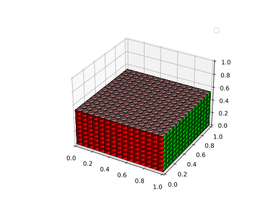
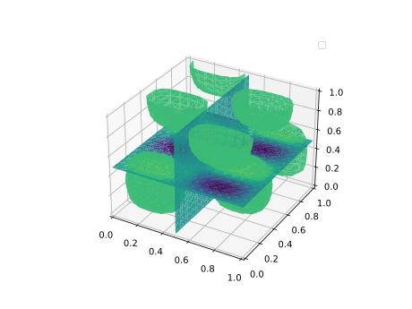

Plotting examples
Plotters
All plot functions in ExtendableGrids.jl have a Plotter keyword argument which defaults to nothing. This allows to pass a module as plotting backend without creating a dependency. Fully supported are PyPlot and GLMakie. WGLMakie and CairoMakie work in principle but in the moment don't deliver all necessary functionality.
Also supported is VTKView which is exeprimental and works only on linux
Generally, grids and P1 FEM functions on grids can be plotted up to now.
Grid plots
Here, we define some sample grids for plotting purposes.
function grid1d(;n=50)
X=collect(0:1/n:1)
g=simplexgrid(X)
end
function grid2d(;n=20)
X=collect(0:1/n:1)
g=simplexgrid(X,X)
end
function grid3d(;n=15)
X=collect(0:1/n:1)
g=simplexgrid(X,X,X)
endNow, we can use the plot command of ExtendableGrids to plot grids Note the kwargs xplane, yplane and zplane which allow to control cutplanes which peel off some elements from the grid in 3d and allow to explore the inner triangulation.
For Makie and VTKView, the cutplane values can be controlled interactively.
function plotting_grid3d(;Plotter=nothing)
plot(grid3d(), Plotter=Plotter, zplane=0.49)
end
Function plots
Let us define some functions
function func1d(;n=50)
g=grid1d(n=n)
g,map(x->sinpi(2*x[1]),g)
end
function func2d(;n=20)
g=grid2d(n=n)
g,map((x,y)->sinpi(2*x)*sinpi(3.5*y),g)
end
function func3d(;n=15)
g=grid3d(n=n)
g, map((x,y,z)->sinpi(2*x)*sinpi(3.5*y)*sinpi(1.5*z),g)
endPlotting a function then goes as follows: xplane, yplane and zplane now define cut planes where the function projection is plotted as a heatmap. The additional flevel keyword argument allows to control an isolevel.
For Makie and VTKView, the cutplane values and the flevel can be controlled interactively.
function plotting_func3d(;Plotter=nothing)
g,f=func3d()
plot(g,f, Plotter=Plotter, zplane=0.49,xplane=0.49,flevel=0.25)
end
Multiscene plots
We can combine multiple plots into one scene according to some layout grid given by the layout parameter.
The ',' key for GLMakie and the '*' key for VTKView allow to switch between gallery view (default) and focused view of only one subscene.
function plotting_multiscene(;Plotter=nothing)
p=PlotContext(;Plotter=Plotter,layout=(2,3),clear=true,resolution=(800,500))
plot!(p[1,1],grid1d())
plot!(p[2,1],func1d()...)
plot!(p[1,2],grid2d())
plot!(p[2,2],func2d()...,colormap=:bamako)
plot!(p[1,3],grid3d(),zplane=0.49)
plot!(p[2,3],func3d()...,zplane=0.49,flevel=0.5,colormap=:bamako)
p
end
This page was generated using Literate.jl.